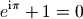
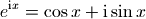
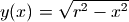

SymPy-符号运算好帮手¶
SymPy是Python的数学符号计算库，用它可以进行数学公式的符号推导。为了调用方便，下面所有的实例程序都假设事先从sympy库导入了所有内容：
>>> from sympy import *
封面上的经典公式¶
本书的封面上的公式：

叫做欧拉恒等式，其中e是自然指数的底，i是虚数单位，  是圆周率。此公式被誉为数学最奇妙的公式，它将5个基本数学常数用加法、乘法和幂运算联系起来。下面用SymPy验证一下这个公式。
是圆周率。此公式被誉为数学最奇妙的公式，它将5个基本数学常数用加法、乘法和幂运算联系起来。下面用SymPy验证一下这个公式。
载入的符号中，E表示自然指数的底，I表示虚数单位，pi表示圆周率，因此上述的公式可以直接如下计算：
>>> E**(I*pi)+1
0
欧拉恒等式可以下面的公式进行计算，

为了用SymPy求证上面的公式，我们需要引入变量x。在SymPy中，数学符号是Symbol类的对象，因此必须先创建之后才能使用：
>>> x = Symbol('x')
expand函数可以将公式展开，我们用它来展开E**(I*pi)试试看：
>>> expand( E**(I*x) )
exp(I*x)
没有成功，只是换了一种写法而已。这里的exp不是math.exp或者numpy.exp，而是sympy.exp，它是一个类，用来表述自然指数函数。
expand函数有关键字参数complex，当它为True时，expand将把公式分为实数和虚数两个部分：
>>> expand(exp(I*x), complex=True)
I*exp(-im(x))*sin(re(x)) + cos(re(x))*exp(-im(x))
这次得到的结果相当复杂，其中sin, cos, re, im都是sympy定义的类，re表示取实数部分，im表示取虚数部分。显然这里的运算将符号x当作复数了。为了指定符号x必须是实数，我们需要如下重新定义符号x：
>>> x = Symbol("x", real=True)
>>> expand(exp(I*x), complex=True)
I*sin(x) + cos(x)
终于得到了我们需要的公式。那么如何证明它呢。我们可以用泰勒多项式展开：
>>> tmp = series(exp(I*x), x, 0, 10)
>>> pprint(tmp)
2 3 4 5 6 7 8 9
x I*x x I*x x I*x x I*x
1 + I*x - -- - ---- + -- + ---- - --- - ---- + ----- + ------ + O(x**10)
2 6 24 120 720 5040 40320 362880
series是泰勒展开函数，pprint将公式用更好看的格式打印出来。下面分别获得tmp的实部和虚部，分别和cos(x)和sin(x)的展开公式进行比较：
>>> pprint(re(tmp)) 2 4 6 8 x x x x 1 + re(O(x**10)) - -- + -- - --- + ----- 2 24 720 40320>>> pprint( series( cos(x), x, 0, 10) ) 2 4 6 8 x x x x 1 - -- + -- - --- + ----- + O(x**10) 2 24 720 40320>>> pprint(im(tmp)) 3 5 7 9 x x x x x + im(O(x**10)) - -- + --- - ---- + ------ 6 120 5040 362880>>> pprint(series(sin(x), x, 0, 10)) 3 5 7 9 x x x x x - -- + --- - ---- + ------ + O(x**10) 6 120 5040 362880
球体体积¶
在用SciPy数值积分一节我们介绍了如何使用数值定积分计算球体的体积，而SymPy的符号积分函数integrate则可以帮助我们进行符号积分。integrate可以进行不定积分：
>>> integrate(x*sin(x), x)
-x*cos(x) + sin(x)
如果指定x的取值范围的话，integrate则进行定积分运算：
>>> integrate(x*sin(x), (x, 0, 2*pi))
-2*pi
为了计算球体体积，首先让我们来看看如何计算圆形面积，假设圆形的半径为r，则圆上任意一点的Y坐标函数为：

因此我们可以直接对上述函数在-r到r区间上进行积分得到半圆面积，注意这里我们使用symbols函数一次创建多个符号：
>>> x, y, r = symbols('x,y,r')
>>> 2 * integrate(sqrt(r*r-x**2), (x, -r, r))
2*Integral((r**2 - x**2)**(1/2), (x, -r, r))
很遗憾，integrate函数没有计算出结果，而是直接返回了我们输入的算式。这是因为SymPy不知道r是大于0的，如下重新定义r，就可以得到正确答案了：
>>> r = symbols('r', positive=True)
>>> circle_area = 2 * integrate(sqrt(r**2-x**2), (x, -r, r))
>>> circle_area
pi*r**2
接下来对此面积公式进行定积分，就可以得到球体的体积，但是随着X轴坐标的变化，对应的切面的的半径会发生变化，现在假设X轴的坐标为x，球体的半径为r，则x处的切面的半径为可以使用前面的公式y(x)计算出。

球体体积的双重定积分示意图
因此我们需要对circle_area中的变量r进行替代：
>>> circle_area = circle_area.subs(r, sqrt(r**2-x**2))
>>> circle_area
pi*(r**2 - x**2)
用subs进行算式替换
subs函数可以将算式中的符号进行替换，它有3种调用方式：
- expression.subs(x, y) : 将算式中的x替换成y
- expression.subs({x:y,u:v}) : 使用字典进行多次替换
- expression.subs([(x,y),(u,v)]) : 使用列表进行多次替换
请注意多次替换是顺序执行的，因此：
expression.sub([(x,y),(y,x)])
并不能对两个符号x,y进行交换。
然后对circle_area中的变量x在区间-r到r上进行定积分，得到球体的体积公式：
>>> integrate(circle_area, (x, -r, r))
4*pi*r**3/3